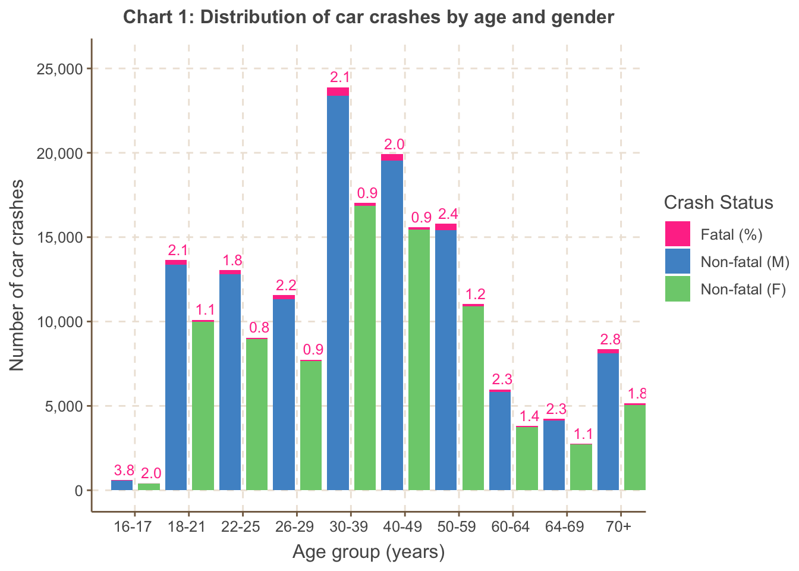
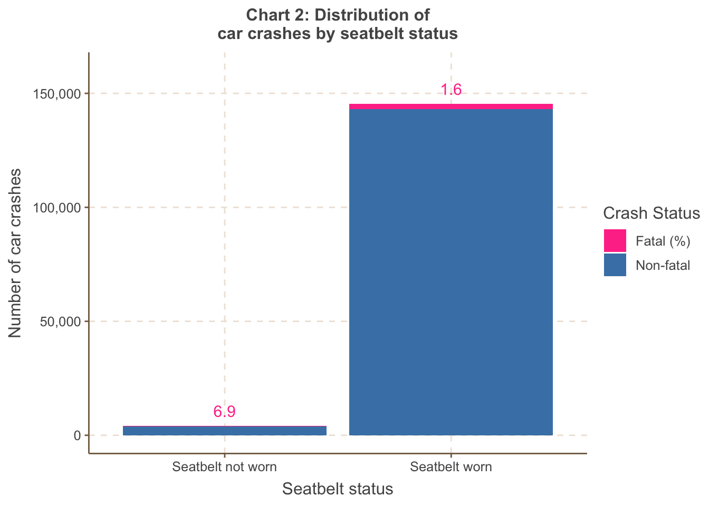
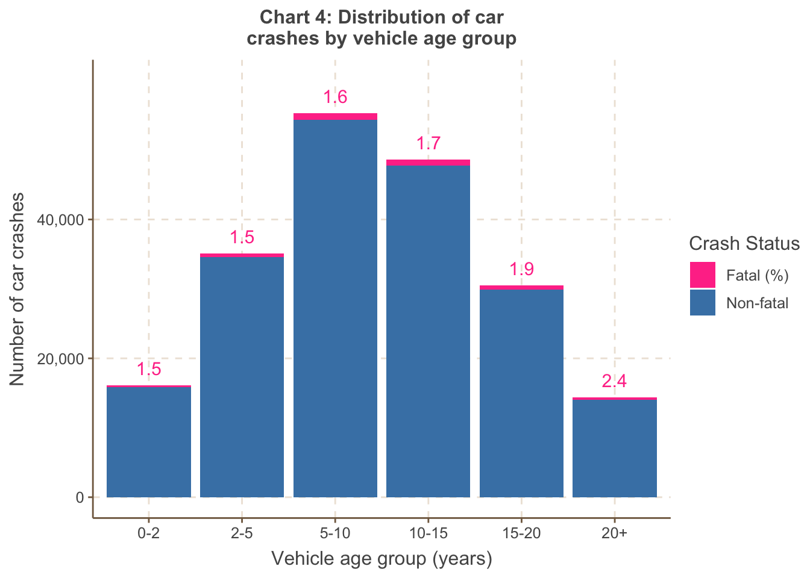
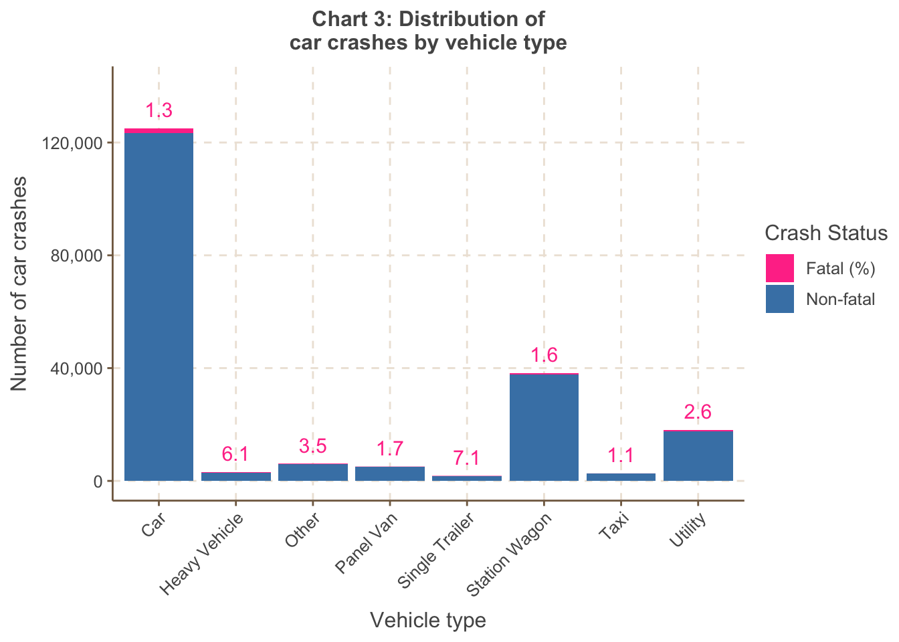
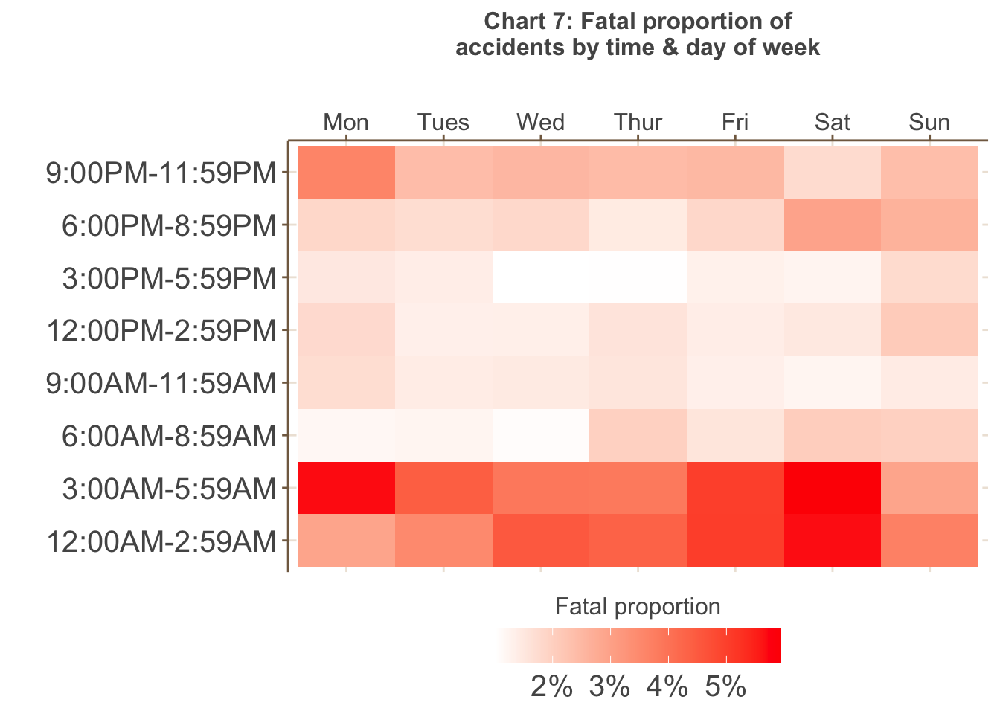
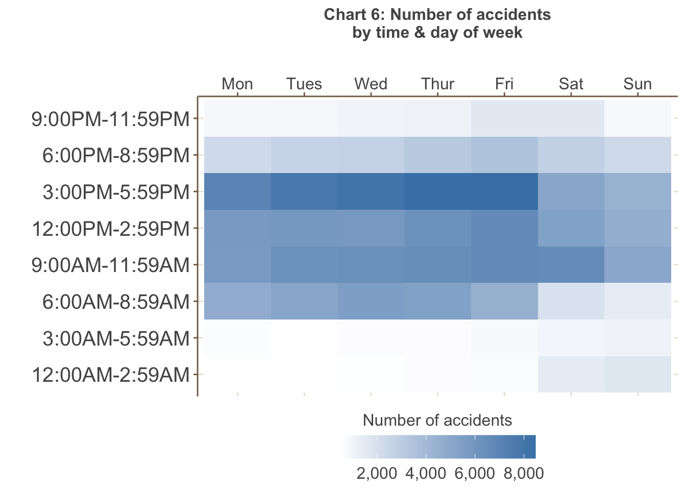
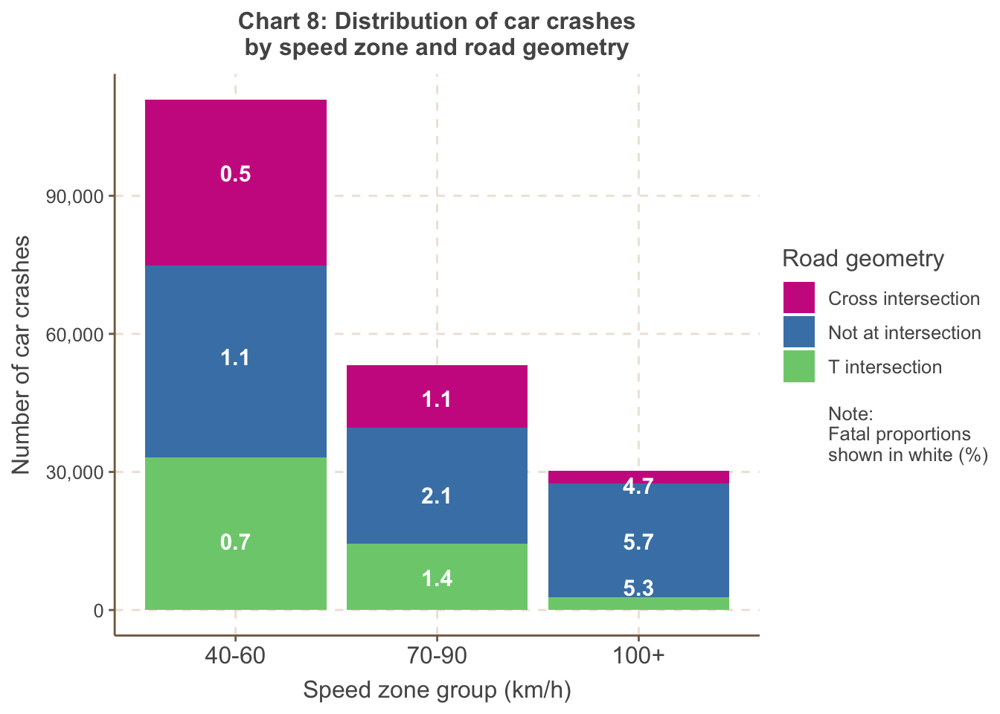

Some advanced EDA examples
Extending what we have covered in class
Example 1
This first example utilises a dataset consisting of real road crashes in Victoria obtained from the CrashStats datasets provided by VicRoads. The CrashStats data allows us to analyse serious vehicle crashes based on time, location, conditions, crash type, road user type, object hit etc.
The code below has some wrangling, and then the plots are stored as objects.
library(tidyverse)
library(formattable)
library(kableExtra)
library(ggthemr)
library(chron)
library(dplyr)
library(caret)
library(scales)
library(lubridate)
ggthemr('fresh')
train <- read.csv('VicRoadFatalData.csv')
train <- train %>%
mutate_if(is.character, as.factor)
train$ACCIDENTDATE <- as.Date(as.character(train$ACCIDENTDATE), format = '%Y-%m-%d')
train$ACCIDENTTIME <- times(as.character(train$ACCIDENTTIME))
train$OWNER_POSTCODE <- as.factor(train$OWNER_POSTCODE)
train$TOTAL_NO_OCCUPANTS <- as.integer(train$TOTAL_NO_OCCUPANTS)
train <- train %>%
filter(TOTAL_NO_OCCUPANTS > 0)
train$occ_group <- as.factor(ifelse(train$TOTAL_NO_OCCUPANTS <= 7, train$TOTAL_NO_OCCUPANTS, '7+'))
age_counts <- train %>%
group_by(Age.Group, SEX) %>%
summarise(non_fatal = sum(fatal == 0), fatal = sum(fatal == 1))
# Calculate the proportion of fatal crashes within each age group
age_counts$proportion <- age_counts$fatal / (age_counts$fatal + age_counts$non_fatal)
age_counts$proportion <- round(age_counts$proportion,5)
#age_counts
age_counts$merged <- ifelse(age_counts$SEX == 'M',
paste(age_counts$Age.Group, '', sep = ''),
paste(age_counts$Age.Group, '', sep = ' '))
age_counts_long <- age_counts %>%
pivot_longer(cols = c(non_fatal, fatal, proportion), names_to = 'Crash_Status', values_to = 'Count')
library(scales)
age_gender_plot <- ggplot(filter(age_counts_long, SEX != 'U'), aes(x = factor(merged), y = Count, fill = interaction(Crash_Status, as.integer(factor(merged)) %% 2))) +
geom_bar(stat = 'identity', just = -0.15, width = 0.8) +
geom_text(aes(label = ifelse(Crash_Status == 'proportion', gsub('%', '', scales::percent(Count, accuracy = 0.1)), ''),
y = Count,
group = Crash_Status),
position = position_stack(vjust = 0.5, reverse = TRUE),
color = 'violetred1',
size = 4.2,
vjust = -0.5,
hjust = -0.3) +
xlab('Age group (years)') +
scale_y_continuous(breaks = c(0, 5000, 10000, 15000, 20000, 25000),
labels = scales::comma) +
expand_limits(y = c(0, 25500)) +
ylab('Number of car crashes') +
ggtitle('Chart 1: Distribution of car crashes by age and gender') +
theme(text = element_text(size = 12)) +
theme(plot.title = element_text(size = 12, face = 'bold', hjust = 0.5),
axis.title.x = element_text(hjust = 0.5),
axis.title.y = element_text(hjust = 0.5)) +
scale_x_discrete(breaks = (unique(filter(age_counts_long, SEX != 'U')$merged)[c(seq(1,29,2))])) +
scale_fill_manual(name = 'Crash Status',
breaks = c('fatal.1', 'non_fatal.1', 'non_fatal.0', 'proportion.0', 'proportion.1'),
labels = c('Fatal (%)', 'Non-fatal (M)', 'Non-fatal (F)', '', ''),
values = c('violetred1', 'steelblue3', 'palegreen3', 'white', 'white', 'violetred1'),
na.value = 'violetred1')
helment <- train %>%
group_by(HELMET_BELT_WORN) %>%
summarise(fatal_count = sum(fatal == TRUE), non_fatal_count = sum(fatal == FALSE))
helment$proportion = helment$fatal_count / (helment$fatal_count + helment$non_fatal_count)
helment$proportion = round(helment$proportion, 3)
helmet <- helment %>%
pivot_longer(cols = c(non_fatal_count, fatal_count, proportion), names_to = 'Crash_Status', values_to = 'Count')
helmet <- ggplot(filter(helmet, HELMET_BELT_WORN != 'Other'), aes(x = factor(HELMET_BELT_WORN), y = Count, fill = Crash_Status)) +
geom_bar(stat = 'identity') +
geom_text(aes(label = ifelse(Crash_Status == 'proportion', gsub('%', '', scales::percent(Count, accuracy = 0.1)), ''),
y = Count,
group = Crash_Status),
position = position_stack(vjust = 0.5, reverse = TRUE),
color = 'violetred1',
size = 4,
vjust = -0.8) +
xlab('Seatbelt status') +
ylab('Number of car crashes') +
scale_y_continuous(breaks = c(0, 50000, 100000, 150000),
labels = scales::comma) +
expand_limits(y = c(0, 160000)) +
ggtitle('Chart 2: Distribution of\ncar crashes by seatbelt status') +
theme(text = element_text(size = 12)) +
theme(plot.title = element_text(size = 12,
face = 'bold',
hjust = 0.5),
axis.title.x = element_text(hjust = 0.5),
axis.title.y = element_text(hjust = 0.5)) +
scale_fill_manual(name = 'Crash Status',
labels = c('Fatal (%)', 'Non-fatal', ''),
values = c('violetred1','steelblue','white'))
train$acc_year = format(as.Date(train$ACCIDENTDATE), '%Y')
train$acc_month = format(as.Date(train$ACCIDENTDATE), '%m')
train$acc_month <- as.factor(train$acc_month)
month_names <- month.name
# Assign each level of train$acc_month to the corresponding month name
levels(train$acc_month) <- month_names
# Print the updated factor variable
#train$acc_month
#create age groups for vehicles
train$vehicle_age <- as.integer(as.integer(train$acc_year) + 1 - train$VEHICLE_YEAR_MANUF)
train$v_age_group <- cut(train$vehicle_age, breaks = c(0, 2, 5, 10, 15, 20, 60), labels = c('0-2', '2-5', '5-10', '10-15', '15-20', '20+'))
vaged <- train %>%
group_by(v_age_group) %>%
summarise(fatal_count = sum(fatal == TRUE), non_fatal_count = sum(fatal == FALSE))
vaged$proportion = vaged$fatal_count / (vaged$fatal_count + vaged$non_fatal_count)
vaged$proportion = round(vaged$proportion, 3)
vaged <- vaged %>%
pivot_longer(cols = c(non_fatal_count, fatal_count, proportion), names_to = 'Crash_Status', values_to = 'Count')
vaged <- na.omit(vaged)
veh_age_plot <- ggplot(vaged, aes(x = factor(v_age_group), y = Count, fill = Crash_Status)) +
geom_bar(stat = 'identity') +
geom_text(aes(label = ifelse(Crash_Status == 'proportion', gsub('%', '', scales::percent(Count, accuracy = 0.1)), ''),
y = Count,
group = Crash_Status),
position = position_stack(vjust = 0.5, reverse = TRUE),
color = 'violetred1',
size = 4,
vjust = -0.8) +
xlab('Vehicle age group (years)') +
ylab('Number of car crashes') +
scale_y_continuous(breaks = c(0, 20000, 40000),
labels = scales::comma) +
expand_limits(y = c(0, 60000)) +
ggtitle('Chart 4: Distribution of car\ncrashes by vehicle age group') +
theme(text = element_text(size = 12)) +
theme(plot.title = element_text(size = 12,
face = 'bold',
hjust = 0.5),
axis.title.x = element_text(hjust = 0.5),
axis.title.y = element_text(hjust = 0.5)) +
scale_fill_manual(name = 'Crash Status',
labels = c('Fatal (%)', 'Non-fatal', ''),
values = c('violetred1','steelblue','white'))
vtype <- train %>%
group_by(VEHICLE_TYPE) %>%
summarise(fatal_count = sum(fatal == TRUE), non_fatal_count = sum(fatal == FALSE))
vtype$proportion <- vtype$fatal_count / (vtype$fatal_count + vtype$non_fatal_count)
vtype$proportion <- round(vtype$proportion, 3)
vtype <- vtype %>%
pivot_longer(cols = c(non_fatal_count, fatal_count, proportion), names_to = 'Crash_Status', values_to = 'Count')
# Update the ggplot code
vehicle <- ggplot(vtype, aes(x = factor(VEHICLE_TYPE), y = Count, fill = Crash_Status)) +
geom_bar(stat = 'identity') +
geom_text(aes(label = ifelse(Crash_Status == 'proportion', gsub('%', '', scales::percent(Count, accuracy = 0.1)), ''),
y = Count,
group = Crash_Status),
position = position_stack(vjust = 0.5, reverse = TRUE),
color = 'violetred1',
size = 4,
vjust = -0.8) +
xlab('Vehicle type') +
ylab('Number of car crashes') +
scale_y_continuous(breaks = c(0, 40000, 80000, 120000),
labels = scales::comma) +
expand_limits(y = c(0, 140000)) +
ggtitle('Chart 3: Distribution of\ncar crashes by vehicle type') +
theme(text = element_text(size = 12)) +
theme(plot.title = element_text(size = 12,
face = 'bold',
hjust = 0.5),
axis.title.x = element_text(hjust = 0.5),
axis.title.y = element_text(hjust = 0.5),
axis.text.x = element_text(angle = 45, hjust = 1)) +
scale_fill_manual(name = 'Crash Status',
labels = c('Fatal (%)', 'Non-fatal', ''),
values = c('violetred1', 'steelblue', 'white')) +
scale_x_discrete(labels = c(levels(vtype$VEHICLE_TYPE)[1], 'Heavy Vehicle', levels(vtype$VEHICLE_TYPE)[3:4], 'Single Trailer', levels(vtype$VEHICLE_TYPE)[6:8]))
occupants <- train %>%
group_by(occ_group) %>%
summarise(fatal_count = sum(fatal == TRUE), non_fatal_count = sum(fatal == FALSE))
occupants$proportion <- occupants$fatal_count / (occupants$fatal_count + occupants$non_fatal_count)
occupants$proportion <- round(occupants$proportion, 3)
occupants <- occupants %>%
pivot_longer(cols = c(non_fatal_count, fatal_count, proportion), names_to = 'Crash_Status', values_to = 'Count')
occupantg <- ggplot(occupants, aes(x = factor(occ_group), y = Count, fill = Crash_Status)) +
geom_bar(stat = 'identity') +
geom_text(aes(label = ifelse(Crash_Status == 'proportion', gsub('%', '', scales::percent(Count, accuracy = 0.1)), ''),
y = Count,
group = Crash_Status),
position = position_stack(vjust = 0.5, reverse = TRUE),
color = 'violetred1',
size = 4,
vjust = -0.8) +
xlab('Number of occupants') +
ylab('Number of car crashes') +
scale_y_continuous(labels = scales::comma) +
expand_limits(y = c(0, 160000)) +
theme(plot.title = element_text(size = 12,
face = 'bold',
hjust = 0.5),
axis.title.x = element_text(hjust = 0.5),
axis.title.y = element_text(hjust = 0.5),
axis.text.x = element_text(size = 12, hjust = 1)) +
scale_fill_manual(name = 'Crash Status',
labels = c('Fatal (%)', 'Non-fatal', ''),
values = c('violetred1', 'steelblue', 'white')) +
ggtitle('Chart 5: Distribution of\ncar crashes by occupants') +
theme(text = element_text(size = 12)) +
theme(plot.title = element_text(size = 12,
face = 'bold',
hjust = 0.5),
axis.title.x = element_text(hjust = 0.5),
axis.title.y = element_text(hjust = 0.5))
train$hour <- as.integer(format(strptime(train$ACCIDENTTIME, format = '%H:%M:%S'), format = '%H'))
hourly <- train %>%
group_by(hour) %>%
summarise(fatal_count = sum(fatal == TRUE), non_fatal_count = sum(fatal == FALSE))
hourly$proportion <- hourly$fatal_count / (hourly$fatal_count + hourly$non_fatal_count)
hourly$proportion <- round(hourly$proportion, 3)
hourly <- hourly %>%
pivot_longer(cols = c(non_fatal_count, fatal_count, proportion), names_to = 'Crash_Status', values_to = 'Count')
train$hour <- as.numeric(train$hour) # Convert hour to numeric if it's not already
train$h_block <- cut(train$hour, breaks = c(-1, 2, 5, 8, 12, 15, 18, 21, 24),
labels = c('12:00AM-2:59AM', '3:00AM-5:59AM', '6:00AM-8:59AM', '9:00AM-11:59AM',
'12:00PM-2:59PM', '3:00PM-5:59PM', '6:00PM-8:59PM', '9:00PM-11:59PM'),
include.lowest = TRUE)
h_prop <- train %>%
group_by(h_block, DAY_OF_WEEK) %>%
summarise(fatal_count = sum(fatal == TRUE), non_fatal_count = sum(fatal == FALSE))
h_prop$proportion <- h_prop$fatal_count / (h_prop$fatal_count + h_prop$non_fatal_count)
summary_table_count <- train %>% group_by(h_block, DAY_OF_WEEK) %>% summarise(Count = n())
summary_table_prop <- train %>% group_by(h_block, DAY_OF_WEEK) %>% summarise(Count =n())
summary_table_prop <- aggregate(fatal ~ h_block + DAY_OF_WEEK, data = train, FUN = function(x) sum(x) / length(x))
weekday_order <- c('Monday', 'Tuesday', 'Wednesday', 'Thursday', 'Friday', 'Saturday', 'Sunday')
h_prop$DAY_OF_WEEK <- factor(h_prop$DAY_OF_WEEK, levels = weekday_order)
summary_table_count$DAY_OF_WEEK <- factor(summary_table_count$DAY_OF_WEEK, levels = weekday_order)
weekday_levels <- c('Mon', 'Tues', 'Wed', 'Thur', 'Fri', 'Sat', 'Sun')
levels(h_prop$DAY_OF_WEEK) <- weekday_levels
levels(summary_table_count$DAY_OF_WEEK) <- weekday_levels
# Create the plot for total proportion of 1s
fataltime <- ggplot(h_prop, aes(y = h_block, x = DAY_OF_WEEK, fill = proportion)) +
geom_tile() +
scale_fill_gradient(low = 'white', high = 'red', labels = scales::percent_format()) +
labs(x = '', y = '', fill = 'Fatal proportion') +
scale_x_discrete(position = 'top') +
theme(legend.position = 'bottom') +
ggtitle('Chart 7: Fatal proportion of\naccidents by time & day of week') +
theme(plot.title = element_text(size = 12, face = 'bold', hjust = 0.5),
axis.title.x = element_text(hjust = 0.5),
axis.title.y = element_text(hjust = 0.5),
axis.text.x = element_text(angle = 0, size = 12),
axis.text.y = element_text(size = 15),
legend.position = 'bottom',
legend.text = element_text(size = 15),
legend.title = element_text(size = 12)) +
guides(fill = guide_colorbar(title.position = 'top', title.hjust = 0.5, barwidth = 10))
voltime <- ggplot(summary_table_count, aes(y = h_block, x = DAY_OF_WEEK, fill = Count)) +
geom_tile() +
scale_fill_gradient(low = 'white', high = 'steelblue', labels = scales::comma_format()) +
labs(x = '', y = '', fill = 'Number of accidents') +
scale_x_discrete(position = 'top') +
ggtitle('Chart 6: Number of accidents\nby time & day of week') +
theme(plot.title = element_text(size = 12, face = 'bold', hjust = 0.5),
axis.title.x = element_text(hjust = 0.5),
axis.title.y = element_text(hjust = 0.5),
axis.text.x = element_text(angle = 0, size = 12),
axis.text.y = element_text(size = 15),
legend.position = 'bottom',
legend.text = element_text(size = 12),
legend.title = element_text(size = 12)) +
guides(fill = guide_colorbar(title.position = 'top', title.hjust = 0.5, barwidth = 10))
train$speed_g <- cut(train$SPEED_ZONE,
breaks = c(40, 60, 90, Inf),
labels = c('40-60', '70-90', '100+'),
include.lowest = TRUE)
road_geom <- train %>%
group_by(ROAD_GEOMETRY, speed_g) %>%
summarise(fatal_count = sum(fatal == TRUE), non_fatal_count = sum(fatal == FALSE))
road_geom$proportion = road_geom$fatal_count / (road_geom$fatal_count + road_geom$non_fatal_count)
road_geom$proportion = round(road_geom$proportion, 3)
road_geom <- road_geom %>%
pivot_longer(cols = c(non_fatal_count, fatal_count, proportion), names_to = 'Crash_Status', values_to = 'Count')
road_geom <- as.data.frame(road_geom)
road_geom$ROAD_GEOMETRY <- factor(road_geom$ROAD_GEOMETRY,
levels = c('Cross intersection', 'Not at intersection', 'T intersection', 'Other'))
road_geom$Count <- ifelse(road_geom$ROAD_GEOMETRY == 'Other', 0, road_geom$Count)
# Sample data for text labels
labels_df <- data.frame(
speed_g = c('40-60', '40-60', '40-60', '70-90', '70-90', '70-90', '100+', '100+', '100+'),
ROAD_GEOMETRY = c('Cross intersection', 'Not at intersection', 'T intersection',
'Cross intersection', 'Not at intersection', 'T intersection',
'Cross intersection', 'Not at intersection', 'T intersection'),
y_labels = c('0.7', '1.1', '0.5', '1.4', '2.1', '1.1', '5.3', '5.7', '4.7'),
Count = c(15000, 55000, 95000, 7000, 25000, 46000, 5000, 15000, 27000),
stringsAsFactors = FALSE
)
road_g <- ggplot(road_geom, aes(x = speed_g, y = as.numeric(Count), fill = as.factor(ROAD_GEOMETRY))) +
geom_bar(stat = 'identity') +
xlab('Speed zone group (km/h)') +
ylab('Number of car crashes') +
scale_y_continuous(labels = scales::comma) +
theme(plot.title = element_text(size = 12, face = 'bold', hjust = 0.5),
axis.title.x = element_text(hjust = 0.5),
axis.title.y = element_text(hjust = 0.5),
axis.text.x = element_text(size = 12)) +
ggtitle('Chart 8: Distribution of car crashes\nby speed zone and road geometry') +
theme(text = element_text(size = 12)) +
theme(plot.title = element_text(size = 12, face = 'bold', hjust = 0.5),
axis.title.x = element_text(hjust = 0.5),
axis.title.y = element_text(hjust = 0.5)) +
scale_fill_manual(name = 'Road geometry',
labels = c('Cross intersection', 'Not at intersection', 'T intersection', '\nNote: \nFatal proportions\nshown in white (%)'),
values = c('maroon3', 'steelblue', 'palegreen3', 'white')) +
geom_text(data = labels_df, aes(label = y_labels), color = 'white', fontface = 'bold', size = 4)Example 1 (plots)

Analysis

Analysis

Analysis

Analysis

Analysis

Analysis

Analysis

Analysis
Example 2 - plotly examples
library(plotly)
library(htmlwidgets)
combi <- read.csv("Melbourne_housing_data_cleaned.csv")
# Create a correlation matrix
correlation_matrix <- cor(combi[, c("Price", "Rooms", "Bathroom", "Car", "Landsize")])
# Create an interactive heatmap
heatmap <- plot_ly(z = correlation_matrix, x = colnames(correlation_matrix), y = colnames(correlation_matrix),
type = "heatmap", colorscale = "RdYlBu")
# Customize the layout
layout <- list(
title = "Interactive Heatmap of Correlations",
xaxis = list(tickangle = 45),
yaxis = list(tickangle = 45)
)
# Create and display the interactive plot
plot_heatmap <- heatmap %>% layout(layout)
saveWidget(plot_heatmap, file = "heatmap.html")library(plotly)
# Assuming your dataset is named 'combi'
# Group data by CouncilArea and calculate the count of properties
council_area_data <- combi %>%
group_by(CouncilArea) %>%
summarize(Count = n())
# Create a sunburst plot
sunburst_plot <- plot_ly(
ids = council_area_data$CouncilArea,
labels = council_area_data$CouncilArea,
parents = "",
values = council_area_data$Count,
type = 'sunburst'
)
# Customize the sunburst plot
sunburst_plot <- sunburst_plot %>%
layout(
margin = list(l = 0, r = 0, b = 0, t = 0),
sunburstcolors = colorRamp(c("lightblue", "blue"))
)
# Create and display the interactive sunburst plot
saveWidget(sunburst_plot, file = "sunburst.html")Example 2
- This second example utilises the Melbourne housing market dataset. Note the code below does not include the pre-processing stage, which is necessary as the raw data from Kaggle has missing values.
- It utilises interactive map libraries
library(leaflet)
library(htmlwidgets)
melb <- read.csv("Melbourne_housing_data_cleaned.csv")
melb$Price <- as.character(melb$Price)
# Define a color palette
colors <- colorRampPalette(c("lightblue", "navy")) # Adjust the color range as needed
library(leaflet)
library(RColorBrewer) # You'll need this package for color scales
# Assuming you have a dataset 'melb' with columns 'Longitude' and 'Latitude'
# Convert the 'Price' column to character
melb$Price <- as.numeric(melb$Price)
# Define a color palette
library(leaflet)
# Define a custom color palette for Price
# Define the number of color steps and labels you want
library(leaflet)
# Define a custom color palette for Price
custom_palette <- colorNumeric(
palette = c("steelblue2", "white"), # Your custom colors for low and high values
domain = melb$Price
)
# Create the map
m <- leaflet(melb) %>%
addTiles(urlTemplate = "https://{s}.basemaps.cartocdn.com/light_all/{z}/{x}/{y}.png") %>%
addCircleMarkers(
lng = ~Longitude,
lat = ~Latitude,
popup = ~Price,
radius = 3,
color = ~custom_palette(Price)) %>%
addLegend("bottomright", pal = custom_palette, values = ~Price,
title = "Price (AUD)",
labFormat = labelFormat(prefix = "$"),
opacity = 1)
# Save the Leaflet map as an HTML widget
saveWidget(m, file = "leaflet_map.html")
Example 3
This slideshow contains visualisations created using two datasets. The first is the Melbourne housing market dataset. The second is cash rate data from the RBA. The rationale for using the cash rate data was to overlay the time series analysis of property sales.
Some of the interactive plots were creating using tableau, but you can replicate them with the interactive plot techniques we have introduced
Template title
- Template video here.